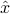

Numbered exercises refer to the collection of EE236A Exercises (pdf). The MATLAB files required by some of these exercises are ex7data.m, ex13data.m, ex14data.m, ex15data.m, ex20data.m, ex30data.m.
Homework 1 (due 10/8): Exercises 2, 4, 5, 6 (b, d, e, f, g, h), 7, 9 (a,c).
Homework 2 (due 10/15): Exercises 12, 17, 19 (b), 25, 35.
Homework 3 (due 10/22): Exercises 20, 28, 36 (a), 37, 41. You can skip the last part of question 36 (‘For each , if it is an extreme point …’).
Homework 4 (due 10/29): Exercises 21, 40, 46, 49, 54.
Homework 5 (due 11/5): Exercises 23, 47, 59, 66, 67.
Homework 6 (due Thursday 11/14): Exercises 60, 61, 63, 75, 82.
Homework 7 (due 11/21): Exercises 78, 83, 88 (b), 91.
Homework 8 (due 12/5).
Homework is due at 5PM on the due date. It can be submitted in the lectures or in the submission box in the TA meeting room (67-112 in Engineering 4). Late homework will not be accepted.
Homework solutions and grades are posted on the EEweb course website. (Follow the links to “Assignments” or “Grades”.)
Lectures: Kinsey 1200B. Tue & Thu 10:00-11:50A.
Course material: The lecture notes are available from this website and are intended to be self-contained. The following books are useful as reference texts. (The links to on-line versions work on the UCLA campus.)
D. Bertsimas and J. N. Tsitsiklis, Introduction to Linear Optimization (Athena Scientific).
M. C. Ferris, O. L. Mangasarian, S. J. Wright, Linear Programming with MATLAB (SIAM).
D. Luenberger and Y. Ye, Linear and Nonlinear Programming (Springer).
C. H. Papadimitriou and K. Steiglitz, Combinatorial Optimization. Algorithms and Complexity (Dover).
C. Roos, T. Terlaky, J.-Ph. Vial, Interior Point Methods for Linear Optimization (Springer).
A. Schrijver, Theory of Linear and Integer Programming (Wiley).
R. J. Vanderbei, Linear Programming: Foundations and Extensions (Springer).
S. J. Wright, Primal-dual Interior-Point Methods (SIAM).
Course requirements
Weekly homework.
Open book final exam on Thursday, December 12, 3:00PM-6:00PM.
Grading. Approximate weights: homework 30%, final exam 70%.
Prerequisites. Basic linear algebra (vectors, matrices, linear equations). The essential topics will be reviewed in the first lectures.
MATLAB. The MATLAB linear programming solver is called linprog and is included in the optimization toolbox. Students who don’t have the optimization toolbox can request a free semester license of the MOSEK optimization tools for MATLAB. MOSEK includes an LP solver linprog with the same calling sequence as MATLAB’s linprog. You can also use the routine lp236a.m, a pure MATLAB implementation of a primal-dual method. This code is less efficient and reliable than the MOSEK solver, but should be adequate for the purposes of this course. The following MATLAB packages allow you to specify and solve LPs using a very simple and intuitive description format: CVX (which includes the necessary solver) and YALMIP.
Octave. Octave users can download the Octave version of lp236a.m.
Python. Python users can download the CVXOPT package, which includes an LP solver and modeling support.